LGCSE Mathematics Question Bank
Practice questions from past ECoL examination papers, organized by topic.
Geometrical Terms and Relationships
102.
In the figure, AEB and AFC are straight lines.
AE = 3 cm, EB = 5 cm, AF = 4 cm, EF = 3.6 cm and FC = 2 cm.
(a) Stating your reasons clearly, show that triangle ABC and triangle AFE are similar.
AE = 3 cm, EB = 5 cm, AF = 4 cm, EF = 3.6 cm and FC = 2 cm.
(a) ......................... [3]
(b) Calculate the length of BC.
(b) BC = ......................... cm [2]
(c) Find the value of
(c) ......................... [2]
Paper 2
103.
The diagram shows a logo in the shape of a regular polygon.
(a) State the name of the regular polygon.

(a) ......................... [1]
(b) Write the total number of isosceles triangles that are only white or only grey.
(b) ......................... [1]
(c) State the order of rotational symmetry of the logo.
(c) ......................... [1]
(d) Find the size of the interior angle of the regular polygon.
(d) ......................... ° [2]
Paper 2
104.
The diagram shows two circles, one with centre B and another with centre D.
The two circles intersect at A and C.
T is the point on one circle from which TA and TC are tangents to the other circle.
Angle ATB = 30°.
(a) Explain why the two circles are equal.
The two circles intersect at A and C.
T is the point on one circle from which TA and TC are tangents to the other circle.
Angle ATB = 30°.
(a) ......................... [1]
(b) Find:
(i) Angle ATC,
(i) Angle ATC,
(b)(i) ATC = ......................... [1]
(ii) The reflex angle ABC.
(b)(ii) Reflex angle ABC = ......................... [2]
Paper 2
105.
In the diagram, ABCD is a cyclic quadrilateral. AE is a straight line.
 Express y in terms of x.
Express y in terms of x.
y = ......................... [2]
Paper 2
106.
The diagram shows two polygons joined at side XY. AD is a straight line.
Calculate the size of angle ECD. Show your working clearly.
ECD = ......................... [4]
Paper 2
107.
Name the prism that has exactly 3 planes of symmetry.
......................... [1]
Paper 2
108.
Construct a regular polygon of sides 3 cm and exterior angle 60°.
See diagram [3]
Paper 2
109.
Is it true that a rhombus is also a kite? Give reasons to support your answer.
......................... [3]
Paper 2
110.
The diagram shows triangle LMN.
MN is parallel to RT.
MT and NR intersect at P.
MN = 12 cm, NT = 16 cm, TL = 8 cm and RL = 10 cm.
(a) Name the triangle which is similar to triangle LRT.
MN is parallel to RT.
MT and NR intersect at P.
MN = 12 cm, NT = 16 cm, TL = 8 cm and RL = 10 cm.
(a) ......................... [1]
(b) Calculate the length of MR.
(b) MR = ......................... cm [2]
(c) MP = 18 cm. Calculate the length of PT.
(c) PT = ......................... cm [3]
(d) Write one word to describe the relationship between angle TRM and angle NMR.
(d) ......................... [1]
Paper 2
111.
A polygon has n sides.
Two of its exterior angles are 23° and 85°, while the other (n − 2) exterior angles are 14° each.
Calculate the value of n.
Two of its exterior angles are 23° and 85°, while the other (n − 2) exterior angles are 14° each.
Calculate the value of n.
n = ......................... [2]
Paper 2
112.
In the diagram, M and N are the midpoints of AB and AC respectively.
BC and MN are parallel.
(a) Find the coordinates of M.
BC and MN are parallel.
(a) M = (......................... , .........................) [2]
(b) Find the gradient of BC.
(b) ......................... [1]
(c) Write the equation of MN.
(c) ......................... [2]
(d) Find the length of AC. Leave your answer in the form
.
(d) AC = ......................... [2]
Paper 2
113.
The diagram shows a design of a tile in the shape of a regular octagon.
The design is made from eight squares all of the same size symmetrically placed inside the octagon as shown.
(a) State the number of lines of symmetry of the shape.
The design is made from eight squares all of the same size symmetrically placed inside the octagon as shown.
(a) ......................... [1]
(b) Calculate the size of the angle between any two adjacent lines of symmetry.
(b) ......................... ° [2]
(c) The letters a and b represent some angles in the diagram.
Given that a = 135°, calculate the value of b.
Given that a = 135°, calculate the value of b.

(c) b = ......................... ° [2]
Paper 2
114.
In the diagram, ABC is an isosceles triangle with AB = AC.
ECA and DFE are straight lines.
DG is parallel to AE and BD = CE = DG.
(a) Name the triangle that is similar to ΔABC.
ECA and DFE are straight lines.
DG is parallel to AE and BD = CE = DG.
(a) ......................... [1]
(b) Show that ΔDGF is congruent to ΔECF.
(b) ......................... [3]
(c) Given that BC = 9 cm and CF = 3 cm:
(i) Explain why BC = 3BG.
(i) Explain why BC = 3BG.
(c)(i) ......................... [1]
(ii) Find the ratio Area ADGC : area ABC.
(c)(ii) ......................... : ......................... [2]
Paper 2
56.
A, B, C, and D are some of the vertices of a regular polygon and PBQ is a straight line.
Reflex = 210° and reflex = 270°.
Calculate:
(i) The size of each exterior angle of the polygon,
Reflex = 210° and reflex = 270°.
(i) The size of each exterior angle of the polygon,
......................... [3]
(ii) The number of sides of the polygon.
......................... [1]
Paper 4
58.
(a) The point (1, 1) is the midpoint of (a, b) and (b − 3a, 2a).
(i) Show that a = 0, and b = 2.
(i) Show that a = 0, and b = 2.
......................... [5]
(ii) Find c given that (7, c), (1, 1) and (a, b) lie on the same straight line.
c = ......................... [3]
(b) A point (2, t) is a distance 2t + 1 from the point (1, 0).
Calculate the values of t.
Calculate the values of t.
t = ......................... or t = ......................... [4]
Paper 4
59.
A straight line K joins points A(21, a), B(1, 1) and C(3, 25).
(a) Given that B is the midpoint of AC, find the value of a.
(a) Given that B is the midpoint of AC, find the value of a.
a = ......................... [2]
(b) Calculate the gradient of the line K.
......................... [2]
(c) Another straight line Q which is parallel to line K has equation y = mx + 1.
State the value of m.
State the value of m.
m = ......................... [1]
(d) A point D has coordinates (d, 9).
Given that the length of the line joining B and D is 10 units, find two possible values of d.
Given that the length of the line joining B and D is 10 units, find two possible values of d.
d = ......................... or d = ......................... [3]
Paper 4